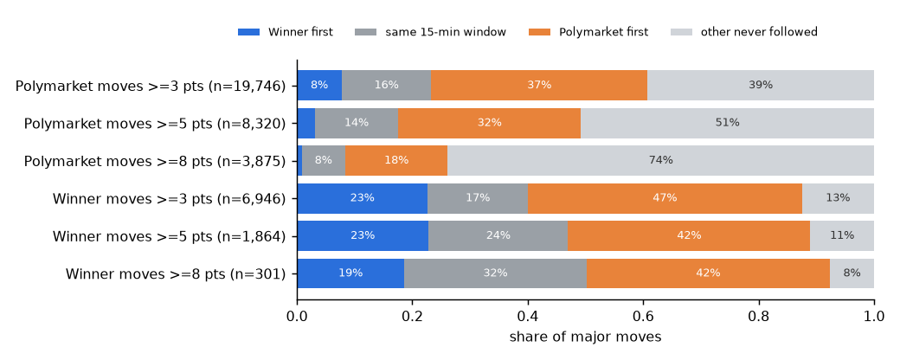
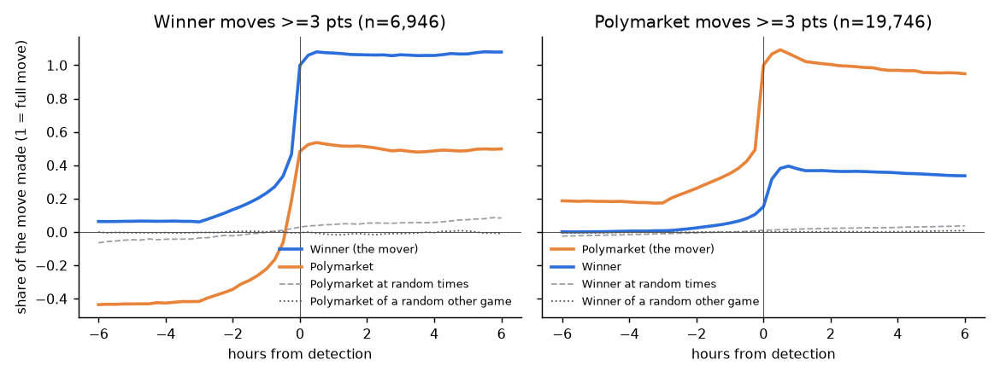
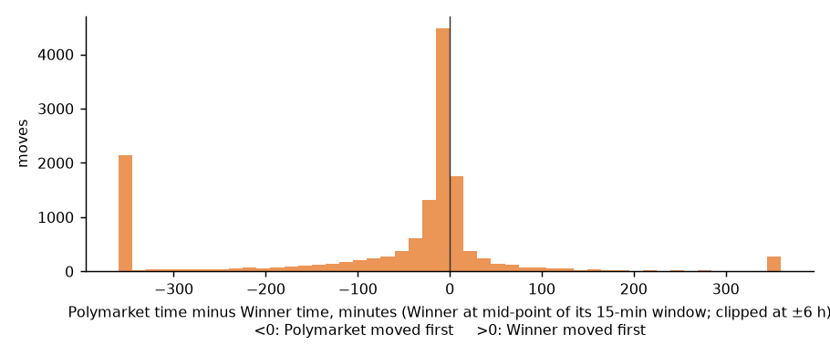
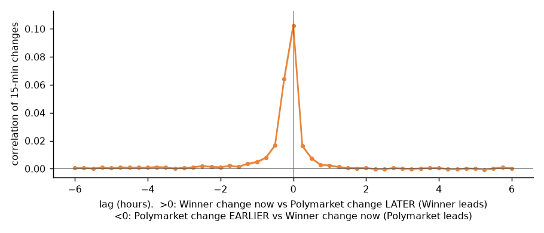
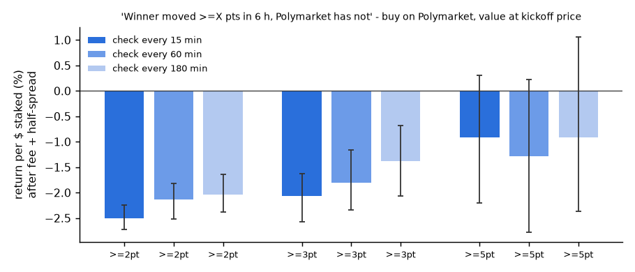
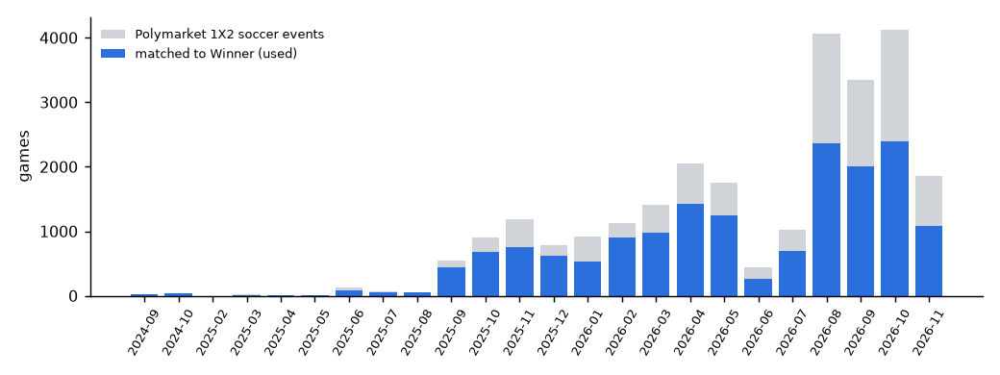
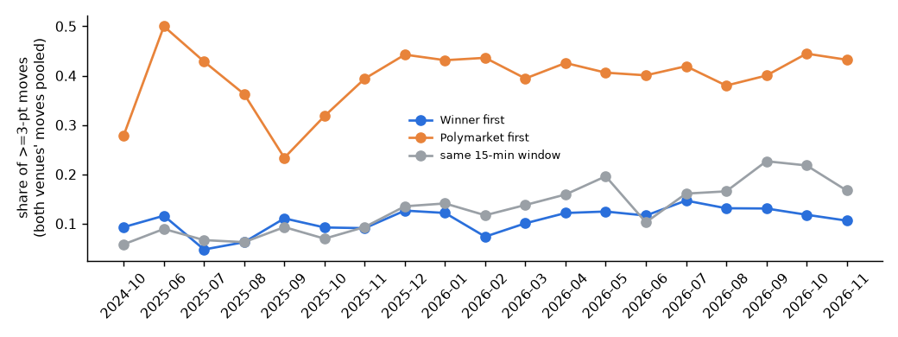

Data: 16,660 matched pre-match games, October 2024 to 18 November 2026, nearly all from September 2025 on. Written 20 November 2026.
Polymarket leads and Winner lags. When Winner's odds make a big move, Polymarket has usually moved already: - In 47% of Winner's ≥3-point moves, Polymarket had already made half of the move before Winner did. - In another 17%, both moved inside the same 15-minute Winner scrape, so the order can't be told apart. - Winner was clearly first in only 23%. That is no more than chance: a random, unrelated Polymarket series gives 26%.
The cross-correlation of 15-minute price changes agrees. Polymarket's change in the previous 15 minutes predicts Winner's change now about 4 times as strongly as the reverse (0.064 vs 0.016).
The "Winner moved, Polymarket hasn't yet" trade is real but too small to pay the costs. After such a signal, Polymarket still drifts our way by +0.6 to +0.85 probability points on average by kickoff. But the taker fee plus half the spread costs about 2 cents per share. The net return is about −2% per $ staked, whether you check every 15 minutes, every hour or every 3 hours. In the fee era (April–November 2026), every combination of check frequency and threshold is negative, and 7 of the 9 confidence intervals are entirely below zero. Checking more often does not help.
The earlier "11 of 12" finding, retested at scale. When Winner really did move first, Polymarket reaches half of Winner's move within 6 hours in 55% of cases, against 17% by chance. Most of that (35%) happens within 15 minutes.
out/fig_coverage.png).prices-history value for each "Yes" token (equals the order-book midpoint). A centred 5-minute median is used for detecting and timing moves; the trading simulation uses the raw midpoint.out/fig_who_first.png, out/fig_event_paths.png, out/fig_lead_hist.png)


| Major move on | Size | Moves (games) | Winner first | Same 15-min window | Polymarket first | Other venue never followed |
|---|---|---|---|---|---|---|
| Winner | 3+ | 6,946 (5,772) | 22.7% [21.8, 23.5] | 17.4% [16.6, 18.3] | 47.5% [46.2, 48.7] | 12.5% [11.6, 13.3] |
| Winner | 5+ | 1,864 (1,732) | 22.8% [21.0, 24.7] | 24.2% [22.4, 26.2] | 42.0% [40.0, 44.0] | 11.1% [9.9, 12.4] |
| Winner | 8+ | 301 (298) | 18.6% [14.6, 22.7] | 31.6% [26.4, 36.6] | 42.2% [37.0, 47.4] | 7.6% [4.7, 10.6] |
| Polymarket | 3+ | 19,746 (10,773) | 7.8% [7.4, 8.1] | 15.5% [15.0, 16.1] | 37.4% [36.7, 38.2] | 39.3% [38.6, 40.1] |
| Polymarket | 5+ | 8,320 (5,282) | 3.1% [2.7, 3.5] | 14.4% [13.6, 15.3] | 31.7% [30.5, 32.8] | 50.8% [49.3, 52.1] |
| Polymarket | 8+ | 3,875 (2,435) | 0.8% [0.5, 1.1] | 7.5% [6.5, 8.4] | 17.8% [16.5, 19.1] | 73.9% [72.6, 75.4] |
Chance baseline (other venue from a random unrelated game):
| Major move on | Size | Winner first | Same window | Polymarket first | Never |
|---|---|---|---|---|---|
| Winner | 3+ | 26% | 1% | 10% | 63% |
| Winner | 5+ | 17% | 0% | 5% | 77% |
| Polymarket | 3+ | 7% | 1% | 18% | 75% |
| Polymarket | 5+ | 3% | 1% | 8% | 89% |
out/gap_closing.csv): most are catch-up moves.Conditional follow (the other venue had not moved half by the time the mover did):
| Moves | ≤15 min | ≤1 h | ≤3 h | ≤6 h | By kickoff | |
|---|---|---|---|---|---|---|
| Winner ≥3 first → Polymarket follows | 2,443 (35% of Winner's moves) | 35% | 42% | 50% | 55% | 64% |
| Chance | 4% | 7% | 12% | 17% | 29% | |
| Polymarket ≥3 first → Winner follows | 15,150 (77% of Polymarket's moves) | 15% | 28% | 33% | 35% | 49% |
| Chance | 1% | 3% | 5% | 7% | 19% |
Lead times in minutes (Winner time at latest / middle / earliest point of its scrape interval):
| Trigger | n | Median gap (latest / mid / earliest) | Middle 50% (mid) | Within ±15 min |
|---|---|---|---|---|
| Winner ≥3: Polymarket minus Winner | 3,232 | −1.5 / +6 / +14.5 (mid CI 6–8) | −4 to +57 | 52% |
| Winner ≥5: Polymarket minus Winner | 1,042 | −4.5 / +3 / +10.5 | −5 to +31 | 60% |
| Polymarket ≥3: Winner minus Polymarket | 10,940 | +12.5 / +20 / +27.5 | +5 to +164 | 42% |
out/fig_xcorr.png, out/xcorr.csv)
15,546 games, 3.96 M 15-minute intervals.
| Lag | Correlation of 15-min changes |
|---|---|
| Polymarket 30 min earlier vs Winner now | 0.017 |
| Polymarket 15 min earlier vs Winner now | 0.064 [0.061, 0.068] |
| Same interval | 0.102 |
| Winner now vs Polymarket 15 min later | 0.016 [0.015, 0.018] |
| Winner now vs Polymarket 30 min later | 0.007 |
out/tables.md)| Winner first | Same window | Polymarket first | Never followed | |
|---|---|---|---|---|
| Top leagues (1,163) | 28% | 12% | 31% | 29% |
| Other leagues (5,768) | 22% | 19% | 51% | 9% |
| Polymarket volume > $250k (1,306) | 27% | 12% | 36% | 25% |
| Volume < $10k (1,268) | 17% | 20% | 55% | 8% |
| 24–72 h before kickoff | 31% | 8% | 51% | 10% |
| 6–12 h | 31% | 16% | 42% | 11% |
| 1–3 h | 23% | 19% | 39% | 20% |
| Last hour (2,209) | 12% | 23% | 54% | 12% |
| Favourite > 50% | 26% | 16% | 41% | 17% |
| 25–50% | 20% | 19% | 53% | 8% |
| Longshot < 25% (76) | 33% | 8% | 25% | 34% |
out/fig_trading.png, out/trading*.csv)
Rule. At each check time: if an outcome's Winner probability moved ≥X points over the last 6 hours and Polymarket moved less than half that in the same direction, buy on Polymarket ("Yes" if up, "No" if down). One bet per game, outcome, direction and check frequency.
Costs. Entry = midpoint one minute after the check + half spread + fee 0.05·p·(1−p). Half-spread 0.5c for ≥$10k volume, 1.5c below (from a live snapshot of 1,818 markets).
Valuation. At the Polymarket kickoff midpoint; realised settlement shown as a check.
| Check every | Winner move ≥ | Bets (games) | Polymarket moves our way, points | Return per $ | No fee | No fee, no spread | Realised |
|---|---|---|---|---|---|---|---|
| 15 min | 2 | 10,916 (6,232) | +0.50 [0.40, 0.59] | −2.5% [−2.7, −2.2] | −0.4% | +1.2% | −2.6% [−4.6, −0.6] |
| 15 min | 3 | 3,859 (2,662) | +0.59 [0.38, 0.79] | −2.1% [−2.6, −1.6] | +0.1% | +1.6% | −1.0% [−4.7, 2.6] |
| 15 min | 5 | 713 (588) | +1.08 [0.52, 1.61] | −0.9% [−2.2, 0.3] | +1.3% | +2.9% | −3.4% [−10.8, 3.4] |
| 1 h | 2 | 7,579 (4,648) | +0.62 [0.48, 0.74] | −2.1% [−2.5, −1.8] | 0.0% | +1.5% | −3.1% [−5.4, −0.4] |
| 1 h | 3 | 2,674 (1,934) | +0.68 [0.43, 0.92] | −1.8% [−2.3, −1.2] | +0.3% | +1.8% | −1.2% [−5.2, 3.0] |
| 1 h | 5 | 489 (411) | +0.83 [0.16, 1.44] | −1.3% [−2.8, 0.2] | +0.9% | +2.5% | −6.2% [−14.2, 2.4] |
| 3 h | 2 | 4,926 (3,216) | +0.62 [0.45, 0.77] | −2.0% [−2.4, −1.6] | 0.0% | +1.5% | −1.5% [−4.2, 1.3] |
| 3 h | 3 | 1,740 (1,299) | +0.85 [0.60, 1.15] | −1.4% [−2.1, −0.7] | +0.7% | +2.2% | +1.7% [−3.2, 6.7] |
| 3 h | 5 | 309 (267) | +0.99 [0.38, 1.75] | −0.9% [−2.4, 1.1] | +1.3% | +2.9% | −5.4% [−17.6, 6.7] |
Fee era only (April–November 2026), Winner move ≥3:
| Check every | Return per $ | Bets with gap > 4 points | Their return per $ |
|---|---|---|---|
| 15 min | −2.7% [−3.3, −2.2] | 392 | −1.5% [−3.8, 0.3] |
| 1 h | −2.4% [−3.0, −1.7] | 243 | −0.6% [−3.5, 3.0] |
| 3 h | −2.2% [−3.0, −1.3] | 150 | +0.8% [−3.6, 5.7] |
out/fig_monthly.png): Nov 2025–Nov 2026, "Polymarket first" is 38–45% of all ≥3-point moves every month, "Winner first" 7–15%; "same window" grew from ~7% to ~20%. The trade (1 h checks, 3 pts) is negative in 12 of 15 months.Python winner_model/.venv; matplotlib in research/lead_lag/.pylib. Run s00_spreads.py … s08_tables.py in order (step 4 downloads ~23 GB of minute prices into cache/prices/).

